vjSIMUFINALE 2 · 16 septembre 2026
Brancher, placer,
tester pour de vrai.
La refonte physique avance dans le monde 3D existant. Voici les captures du jeu et les vérifications réalisées, avec les limites qui restent à traiter.
Les 24 scénarios fournissent le matériel nécessaire pour tester les règles. Une carrière complète avec achats et budget normaux reste à jouer pour valider l’économie et le rythme de progression.
Le départ et les objets, corrigés
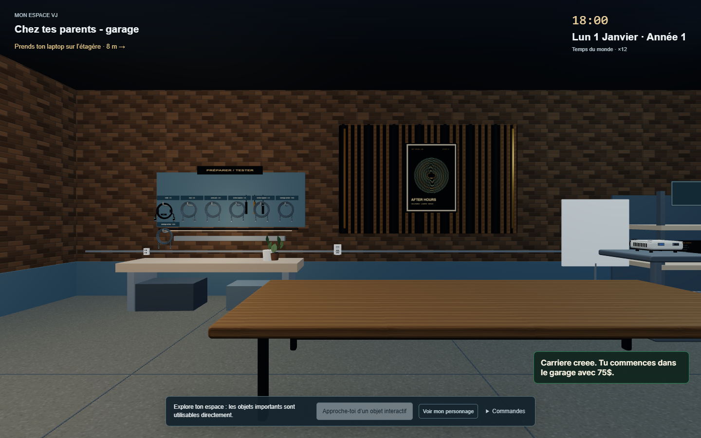
Un bureau à installer soi-même
Le laptop et les multiprises attendent sur l’étagère ; les câbles sont au mur. Le projecteur repose sur le rack existant.
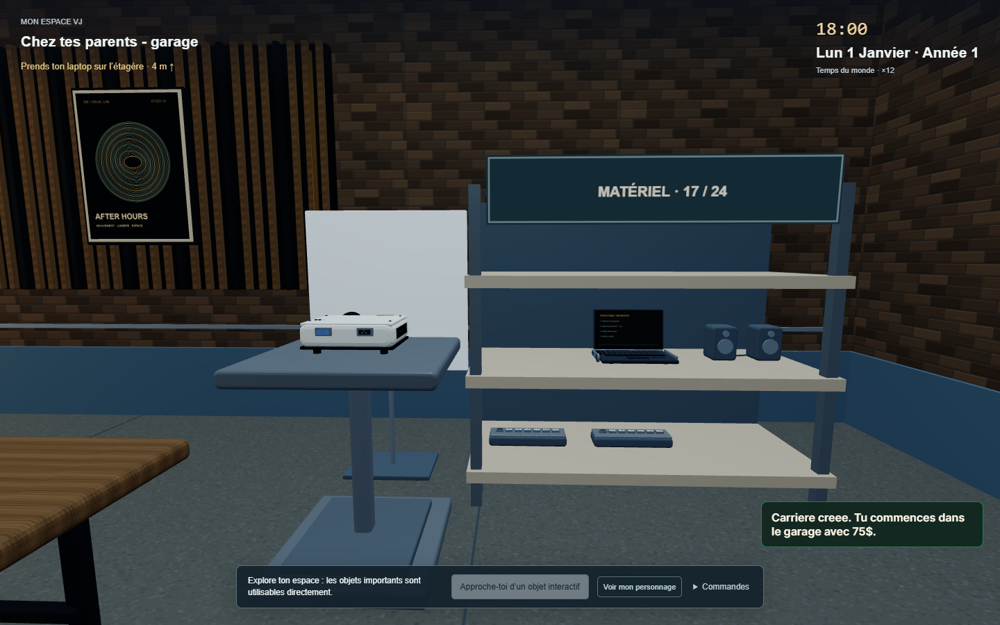
Matériel accessible, taille constante
La taille de l’objet ne change plus entre l’étagère et la main.
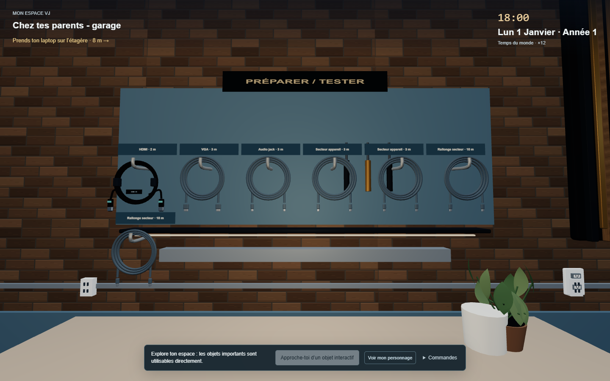
Les câbles du jeu sur leurs crochets
Cliquer puis E pour prendre. Étiquettes distinctes pour signal, secteur et rallonges.
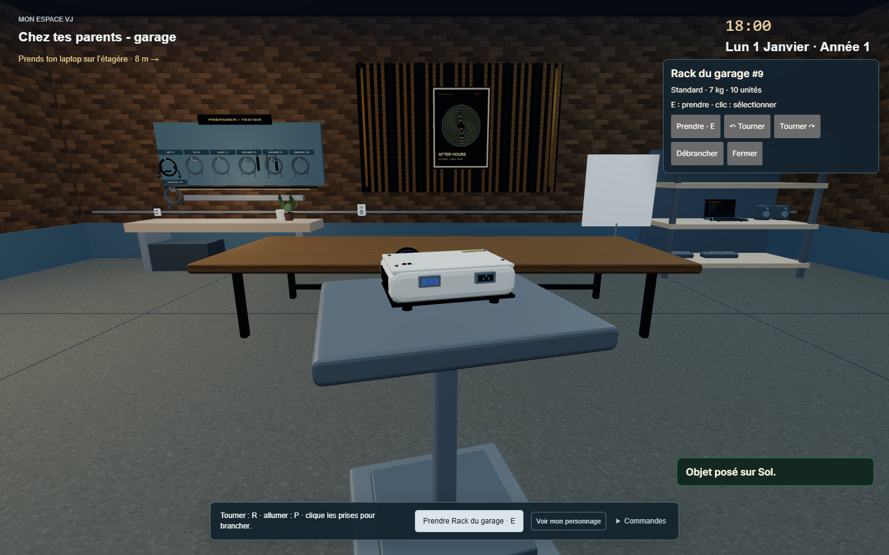
Un seul rack, déplaçable
E pour prendre le rack avec son projecteur ; R pour tourner. Prendre le projecteur seul le sépare. Débrancher avant de déplacer.
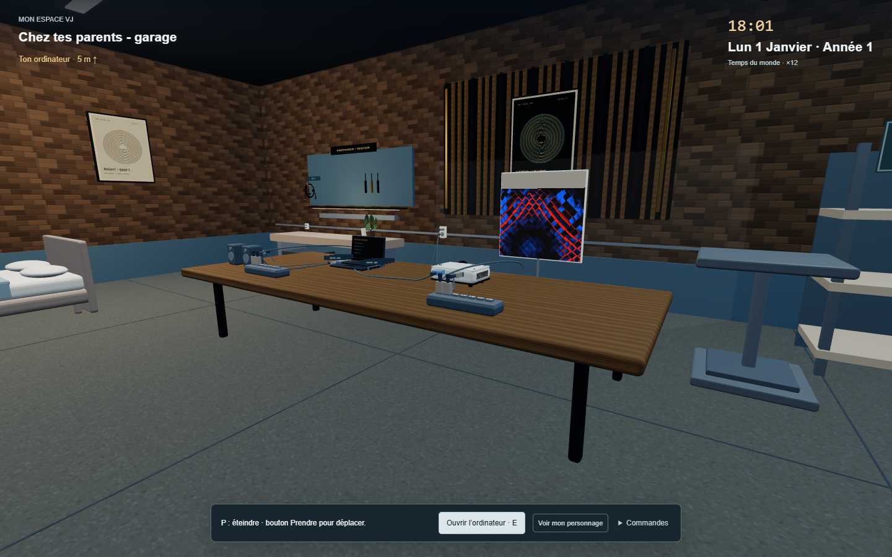
Six branchements vérifiés à la souris
Mur → multiprises → laptop et projecteur. VGA pour l’image ; jack du laptop vers la paire de petits haut-parleurs.
E : prendre / poser · Molette : hauteur · R / Maj+R : tourner · Glisser la souris : regarder. La pose exige un support solide. Les placements d’une sauvegarde existante sont conservés.
Les câbles occupent l’espace
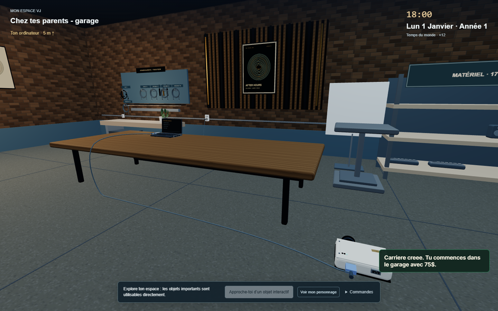
Le câble contourne le plateau
Le trajet rejoint le sol par le bord du bureau. Les prises et les fiches restent attachées aux appareils quand ils bougent, dans la limite de longueur du câble.
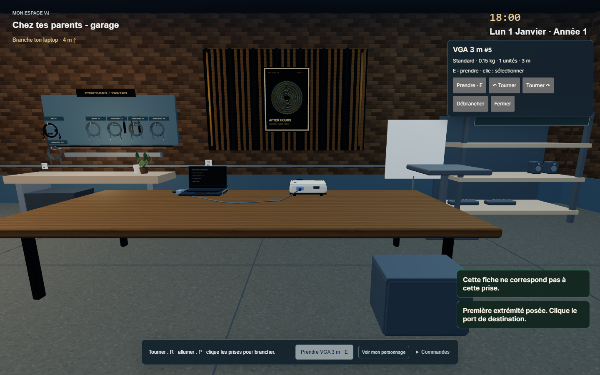
Deux vraies extrémités
Prends le câble avec E, puis clique la prise source et la prise de destination. Une prise incompatible refuse le branchement.
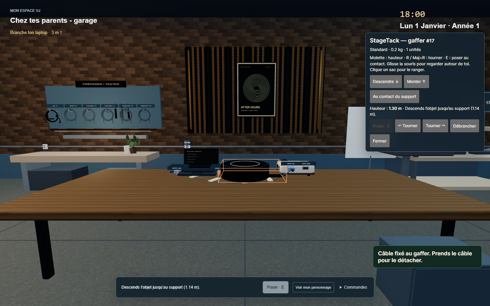
Gaffer visible et utile
Le câble fixé contraint le déplacement des appareils. Prendre le câble le débranche et retire sa fixation.
Des accessoires avec un effet concret
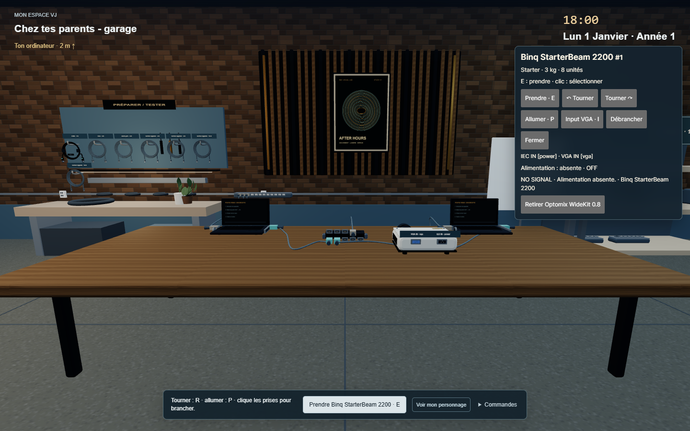
Lentille montée sur l’objectif
Elle agrandit la projection de 25 %. Le projecteur doit être éteint pour l’installer ou la retirer. Ses prises sont maintenant à l’arrière du boîtier.
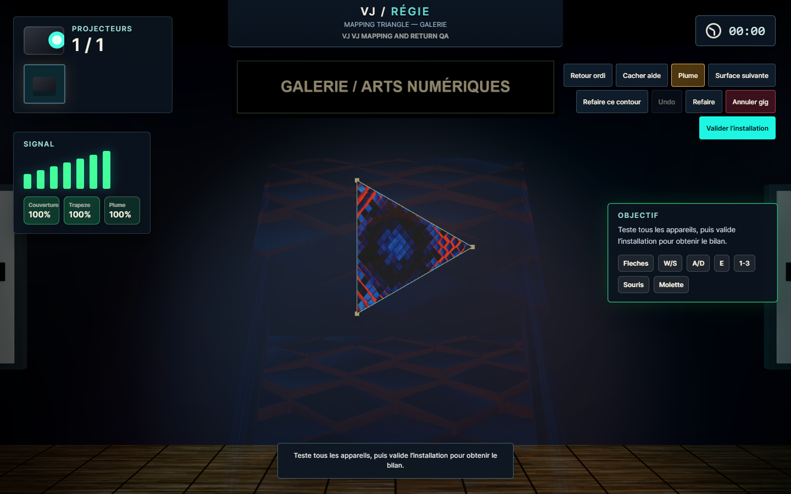
Mapping tracé à la main
Le test a dessiné le triangle à la souris et retrouvé ses points après rechargement. Les repères aident à viser ; ils ne créent aucun point automatiquement.
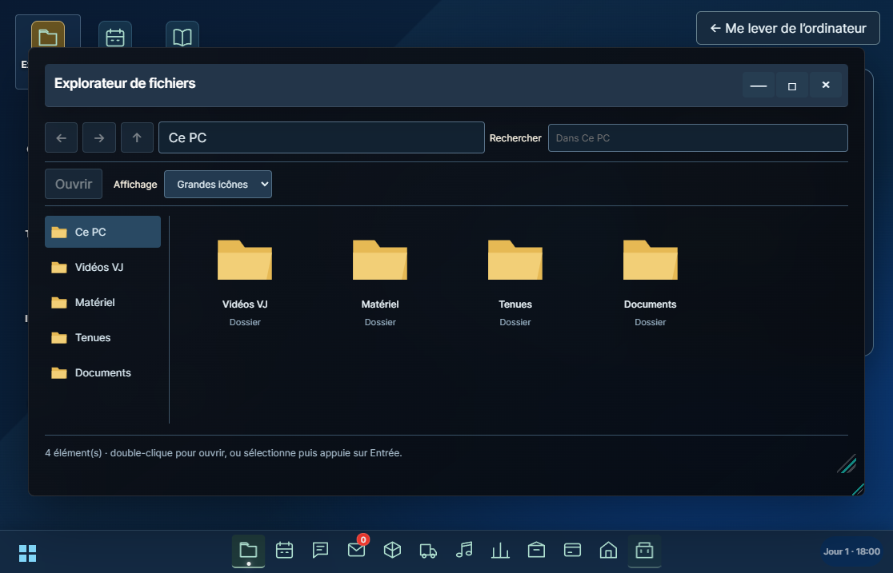
Le guide reste dans l’ordinateur
Le PDF est accessible dans l’application Guide et dans Documents. Les fenêtres conservent le bureau et la navigation du jeu.
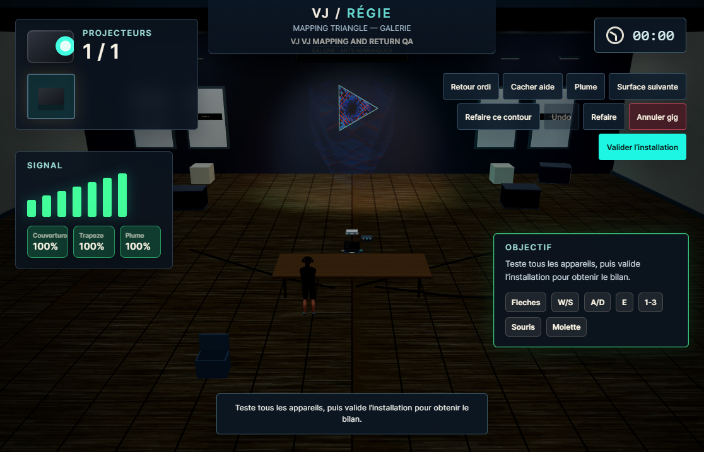
Des informations lisibles
Nom et titre de la gig séparés. Vues principales des 17 applications contrôlées à 1440×900, 1116×717 et 960×600.
Résultats consultables
- Rangement, rack et projecteur déplacés ensemble
- Alimentation, VGA et audio par clics réels
- Hauteur, surfaces, sacs et projection
- 24 gigs et 8 situations d’échec
- Branchement réel à la souris et au clavier
- 6 trajets sans traversée du plateau
- Matrice, GPU et lentille
- Mapping, sauvegarde et retour du matériel
- Applications, modèles et guide
Prochaines validations
Équilibrage d’une carrière sans matériel de test, collisions avec les autres meubles, variantes audio, pannes avancées et rangement de très grandes collections. Le suivi détaillé précise ce qui est fait et ce qui reste.